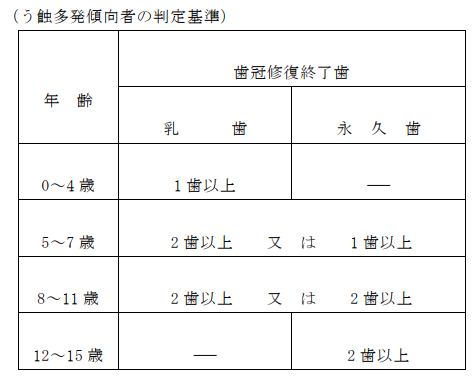

100点
注
１ １回目の歯科疾患管理料は、歯科疾患の管理が必要な患者に対し、当該患者又
はその家族等（以下この部において「患者等」という。）の同意を得て管理計画を作成し、その内容について説明を行った場合に算定する。なお、初診日の属する月に算定する場合は、所定点数の100分の80に相当する点数により算定する。
２ ２回目以降の歯科疾患管理料は、１回目の歯科疾患管理料を算定した患者に対
して、注１の規定による管理計画に基づく継続的な管理を行っている場合であって、歯科疾患の管理及び療養上必要な指導を行ったときに、１回目の歯科疾患管理料を算定した日の属する月の翌月以降月１回に限り算定する。
３ 区分番号Ｂ０００－６に掲げる周術期等口腔機能管理料（Ⅰ）、区分番号Ｂ０００
－７に掲げる周術期等口腔機能管理料（Ⅱ）、区分番号Ｂ０００－８に掲げる周術期等口腔機能管理料（Ⅲ）、区分番号Ｂ００２に掲げる歯科特定疾患療養管理料、区分番号Ｃ００１－３に掲げる歯科疾患在宅療養管理料、区分番号Ｃ００１－５に掲げる在宅患者訪問口腔リハビリテーション指導管理料、区分番号Ｃ００１－６に掲げる小児在宅患者訪問口腔リハビリテーション指導管理料又は区分番号Ｎ００２に掲げる歯科矯正管理料を算定した患者に対して、当該管理の終了後に療養上の必要があって歯科疾患の継続的な管理を行う場合は、区分番号Ｂ０００－６に掲げる周術期等口腔機能管理料（Ⅰ）、区分番号Ｂ０００－７に掲げる周術期等口腔機能管理料（Ⅱ）、区分番号Ｂ０００－８に掲げる周術期等口腔機能管理料（Ⅲ）、区分番号Ｂ００２に掲げる歯科特定疾患療養管理料、区分番号Ｃ００１－３に掲げる歯科疾患在宅療養管理料、区分番号Ｃ００１－５に掲げる在宅患者訪問口腔リハビリテーション指導管理料、区分番号Ｃ００１－６に掲げる小児在宅患者訪問口腔リハビリテーション指導管理料又は区分番号Ｎ００２に掲げる歯科矯正管理料を算定した日の属する月の翌月以降から算定する。
４ 入院中の患者に対して管理を行った場合又は退院した患者に対して退院の日の
属する月に管理を行った場合における当該管理の費用は、第１章第２部第１節、第３節又は第４節の各区分の所定点数に含まれる。ただし、歯科診療及び歯科診療以外の診療を併せて行う保険医療機関の歯科診療以外の診療に係る病棟に入院中の患者又は当該病棟を退院した患者については、この限りでない。
５ 初診日から入院（歯科診療に限る。）中の患者について、退院後に歯科疾患の
継続的な管理が必要な場合は、退院した日の属する月の翌月以降から算定する。
６ 管理計画に基づく治療終了日から起算して２月を経過するまでの間、区分番号
Ａ０００に掲げる初診料は、算定できない。
７ 歯科疾患管理料を算定した月において、区分番号Ｂ０００－６に掲げる周術期
等口腔機能管理料（Ⅰ）、区分番号Ｂ０００－７に掲げる周術期等口腔機能管理料（Ⅱ）、区分番号Ｂ０００－８に掲げる周術期等口腔機能管理料（Ⅲ）、区分番号Ｂ００２に掲げる歯科特定疾患療養管理料、区分番号Ｃ００１－３に掲げる歯科疾患在宅療養管理料、区分番号Ｃ００１－５に掲げる在宅患者訪問口腔リハビリテーション指導管理料、区分番号Ｃ００１－６に掲げる小児在宅患者訪問口腔リハビリテーション指導管理料及び区分番号Ｎ００２に掲げる歯科矯正管理料は、算定できない。
８ 16歳未満のう蝕に罹患している患者であって、う蝕多発傾向にあり、う蝕
に対する歯冠修復終了後もう蝕活動性が高く、継続的な指導管理が必要なもの（以下「う蝕多発傾向者」という。）のうち、４歳以上のう蝕多発傾向者又はその家族等に対して、当該患者の療養を主として担う歯科医師（以下「主治の歯科医師」という。）又はその指示を受けた歯科衛生士が、フッ化物洗口に係る薬液の取扱い及び洗口法に関する指導を行った場合は、歯科疾患管理の実施期間中に患者１人につき１回に限り、フッ化物洗口指導加算として、40点を所定点数に加算する。ただし、区分番号Ｃ００１に掲げる訪問歯科衛生指導料を算定している患者については、当該加算は算定できない。
９ 注１の規定による管理計画に基づき、患者等に対し、歯科疾患の管理に係る内
容を文書により提供した場合は、文書提供加算として、10点を所定点数に加算する。
10 かかりつけ歯科医機能強化型歯科診療所（歯科疾患の管理が必要な患者に対し
、定期的かつ継続的な口腔の管理を行う診療所であって、別に厚生労働大臣が定める施設基準に適合しているものとして地方厚生局長等に届け出たものをいう。以下この表において同じ。）において、エナメル質初期う蝕に罹患している患者に対して、管理及び療養上必要な指導等を行い、その内容について説明を行った場合は、エナメル質初期う蝕管理加算として、260点を所定点数に加算する。
11 別の保険医療機関（歯科診療を行うものを除く。）から歯科治療における総合
的医療管理が必要な患者であるとして文書による診療情報の提供を受けたものに対し、必要な管理及び療養上の指導等を行った場合は、総合医療管理加算として、50点を所定点数に加算する。
12 初診日の属する月から起算して６月を超えて歯科疾患の管理及び療養上必要な
指導を行った場合は、長期管理加算として、次に掲げる点数をそれぞれ所定点数に加算する。
イ かかりつけ歯科医機能強化型歯科診療所の場合 120点
ロ イ以外の保険医療機関の場合 100点
通知
(１) 歯科疾患管理料は、継続的管理を必要とする歯科疾患を有する患者（有床義歯に係る
治療のみを行う患者を除く。）に対して、口腔を一単位（以下「１口腔単位」という。）としてとらえ、患者との協働により行う口腔管理に加えて、病状が改善した歯科疾患等の再発防止及び重症化予防を評価したものである。
(２) １回目の歯科疾患管理料は、患者等の同意を得た上で管理計画を作成し、その内容に
ついて説明した場合に算定する。また、診療録には説明した内容の要点を記載する。なお、「注１」に規定する管理計画は、患者の歯科治療及び口腔管理を行う上で必要な基本状況（全身の状態、基礎疾患の有無、服薬状況、喫煙状況を含む生活習慣の状況等）、口腔の状態（歯科疾患、口腔衛生状態、口腔機能の状態等）、必要に応じて実施した検査結果等の要点、治療方針の概要等、歯科疾患の継続的管理を行う上で必要となる情報をいい、当該患者の状態に応じた口腔管理を行うに当たって、必要な事項等を診療録に記載する。なお、100 分の 80 に相当する点数により算定する場合において、「注８」から「注11」までに規定する加算は、100分の80に相当する点数にそれぞれの点数を加算する。
(３) ２回目以降の歯科疾患管理料は、管理計画に基づく継続的な口腔管理等を行った場合
に算定し、診療録にその要点を記載する。なお、当該管理に当たって、管理計画に変更があった場合（「注８」、「注 10」及び「注 11」に規定する加算に係る管理計画も含む。）は、変更の内容を診療録に記載する。また、１回目に患者の主訴に関する管理を開始し、２回目以降にその他の疾患も含めた管理を行う場合や新たな検査を実施する場合は、検査結果も含め管理計画の変更点を患者等に対して説明する。この場合において、当該月より改めて１口腔単位での管理を開始する。
(４) 歯周病に罹患している患者の管理を行う場合は、歯周病検査の結果を踏まえた治療方
針等を含んだ管理計画を作成する。ただし、初診時に歯周病の急性症状を呈する患者であって、歯周病検査の実施が困難である場合は、急性症状寛解後の歯科疾患管理料算定時までに実施する。なお、急性症状が寛解せず歯周病検査が実施できない場合は、症状の要点を診療録に記載する。
(５) 「注５」は、「注３」に規定する患者を除き、初診日から入院している患者（歯科診
療に限る。）について、退院後に歯科疾患の継続的管理が必要な場合の取扱いを定めたものをいい、入院前に外来において歯科診療を行った場合（外来の歯科診療を行った日と入院日が同日である場合に限る。）も歯科疾患管理料を算定する。
(６) 区分番号Ｂ０００－６に掲げる周術期等口腔機能管理料(Ⅰ)、区分番号Ｂ０００－７
に掲げる周術期等口腔機能管理料(Ⅱ)、区分番号Ｂ０００－８に掲げる周術期等口腔機能管理料(Ⅲ)、区分番号Ｂ００２に掲げる歯科特定疾患療養管理料、区分番号Ｃ００１－３に掲げる歯科疾患在宅療養管理料、区分番号Ｃ００１－５に掲げる在宅患者訪問口腔リハビリテーション指導管理料、区分番号Ｃ００１－６に掲げる小児在宅患者訪問口腔リハビリテーション指導管理料又は区分番号Ｎ００２に掲げる歯科矯正管理料を算定した患者は、周術期等口腔機能管理料等を算定した日の属する月の翌月以降から歯科疾患管理料を算定できる。この場合において、管理計画を作成して患者等に説明する。
(７) 歯科疾患管理料は、区分番号Ｂ０１３に掲げる新製有床義歯管理料若しくは区分番号
Ｈ００１－２に掲げる歯科口腔リハビリテーション料１（「１ 有床義歯の場合」に限る。）を算定している患者（有床義歯に係る治療のみを行う患者を除く。）に対して当該歯科疾患管理を行った場合又は口腔機能低下症若しくは口腔機能発達不全症の患者に対して口腔機能の回復又は維持・向上を目的として医学管理を行う場合若しくは正常な口腔機能の獲得を目的として医学管理を行う場合は当該管理料を算定できる。なお、口腔粘膜疾患等（「特掲診療料の施設基準等」の別表第四歯科特定疾患療養管理料に規定する疾患に掲げる疾患を除く。）を有している患者であって、現に当該歯科疾患に係る治療（有床義歯を原因とする疾患に係る治療を除く。）又は管理を行っている場合は算定できる。
(８) 再診が電話等により行われた場合は、歯科疾患管理料は算定できない。
(９) 「注８」に規定するう蝕多発傾向者とは、継続的な指導管理が必要な者であって、う
蝕多発傾向者の判定基準の左欄の年齢に応じて右欄の歯冠修復終了歯を有するものをいう。
(10) う蝕多発傾向者の判定基準において、(９)にかかわらず次の場合はそれぞれに規定す
るところにより取り扱う。
イ フッ化ジアンミン銀塗布歯は歯冠修復終了歯には含まないが、５歳未満の患者の
初期う蝕で、歯冠修復の実施が患者の非協力等により物理的に困難と判断される場合に限り、当該未処置う蝕歯にフッ化ジアンミン銀を塗布した場合、歯冠修復終了乳歯として取り扱う。
ロ 区分番号Ｉ００３に掲げる初期う蝕早期充填処置を行った場合は、歯冠修復終了
歯として取り扱う。
(11) 「注８」のフッ化物洗口指導による指導管理に係る加算は、次の取扱いとする。
イ 主治の歯科医師又はその指示を受けた歯科衛生士が、家族等に対しフッ化物洗口
に係る指導を行い文書により提供を行った場合に算定する。
ロ フッ化物洗口に用いる薬液とは、毎日法又は週１回法に用いられる洗口用のフッ
化ナトリウム溶液をいう。
ハ フッ化物洗口に係る指導に当たっては、歯科医師が行った場合は次の(イ)から
(ハ)までの内容を含め患者に対し説明を行い、指導内容等を文書により提供した場合に算定する。
(イ) 洗口の方法（薬液の量やうがいの方法）及び頻度
(ロ) 洗口に関する注意事項
(ハ) 薬液の取扱い及びその保管方法
ニ 歯科医師の指示を受けた歯科衛生士が指導を行った場合は、歯科医師は診療録に
指示内容を記載し、歯科衛生士はハに規定する(イ)から(ハ)までの内容を含め患者に対し説明を行い、その内容を文書により提供した場合に算定する。なお、当該指導を行った歯科衛生士は業務に関する記録を作成する。
(12) 「注１」の規定による管理計画に基づき、当該患者等に対し、その内容を文書により
提供した場合は「注９」の文書提供加算を算定する。その場合においては、患者等に提供した文書の写しを診療録に添付し、その文書の内容以外に療養上必要な管理事項がある場合は、その要点を診療録に記載する。ただし、患者等に提供する文書の様式は、初回は「別紙様式１」又はこれに準じた様式とし、２回目以降は、「別紙様式２」又はこれに準じた様式とする。
(13) 「注 10」のエナメル質初期う蝕管理加算は、かかりつけ歯科医機能強化型歯科診療
所の歯科医師が行う、エナメル質に限局した表面が粗造な白濁等の脱灰病変（以下「エナメル質初期う蝕」という。）の治癒又は重症化予防を目的として実施する指導管理等を評価するものをいう。当該加算は、患者の同意を得て管理等の内容について説明を行った上で、エナメル質初期う蝕に対して、フッ化物歯面塗布及び口腔内カラー写真の撮影を行った場合に算定する。また、必要に応じて、プラークコントロール、機械的歯面清掃又はフッ化物洗口の指導を行う。撮影した口腔内カラー写真は、診療録に添付又はデジタル撮影した画像を電子媒体に保存して管理する。この場合において、写真撮影に係る費用は所定点数に含まれ別に算定できない。なお、エナメル質初期う蝕管理加算の２回目以降の算定にあっては、口腔内カラー写真撮影に代えて光学式う蝕検出装置を用いてエナメル質初期う蝕の部位の測定を行った上で算定して差し支えない。この場合において、光学式う蝕検出装置を用いた測定に係る費用は所定点数に含まれ別に算定できない。また、使用した光学式う蝕検出装置の名称と当該部位の測定値を診療録に記載する。なお、当該管理を行った場合は、患者等に対し、説明した内容の要点を診療録に記載する。
(14) 「注 10」のエナメル質初期う蝕管理加算を算定した月は、「注８」に規定する加算、
区分番号Ｉ０２９－２に掲げる在宅等療養患者専門的口腔衛生処置、区分番号Ｉ０３０に掲げる機械的歯面清掃処置、区分番号Ｉ０３０－２に掲げる非経口摂取患者口腔粘膜処置及び区分番号Ｉ０３１に掲げるフッ化物歯面塗布処置は算定できない。
(15) 歯科疾患管理料を算定する保険医療機関は、歯科疾患管理料の趣旨及び内容について、
院内掲示により患者に対して情報提供を行うよう努める。
(16) 「注 11」の総合医療管理加算は、糖尿病の患者、骨吸収抑制薬投与中の患者、感染
性心内膜炎のハイリスク患者、関節リウマチの患者、血液凝固阻止剤投与中の患者又はＨＩＶ感染症の患者であって、別の医科の保険医療機関の当該疾患の担当医から歯科治療を行うに当たり、診療情報提供料に定める様式に基づいた文書により患者の全身状態や服薬状況等についての必要な診療情報の提供を受け、適切な総合医療管理を実施した場合に算定する。なお、算定に当たっては当該疾患の担当医からの情報提供に関する内容及び担当医の保険医療機関名等について診療録に記載又は提供文書の写しを添付する。
(17) 「注 12」の長期管理加算は、歯科疾患の重症化予防に資する長期にわたる継続的な
口腔管理等を評価したものである。当該加算を初めて算定する場合にあっては、当該患者の治療経過及び口腔の状態を踏まえ、今後の口腔管理に当たって特に留意すべき事項を患者等に説明し、診療録には、説明した内容の要点を記載する。